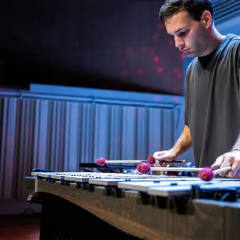

mer 14 ott · dalle 20:30
Note D’autunno dei Giovani Musicisti Europei - "Wood still says nothing" - recital solistico
“WOOD STILL SAYS NOTHING” RECITAL SOLISTICO DEL PERCUSSIONISTA IVAN BOARO 14 OTTOBRE 2026 Trieste, Teatro Miela ore 20.30 Piazza Duca degli Abruzzi 3, Trieste Organizzato da: Scuola per Giovani Musicisti Europei APS – SGME INGRESSO LIBERO Concerto della rassegna “NOTE D’AUTUNNO…
 Indicazioni
Indicazioni
- Costi e prenotazioni
- Costo non indicato · Prenotazione non indicata
- Programma
- Programma da verificare. Apri la fonte ufficiale per orari e possibili aggiornamenti.
- In caso di maltempo
- Nessuna indicazione specifica pubblicata.
- Note
- Acquisito automaticamente dalla fonte.
L’EVENTO
Descrizione completa
“WOOD STILL SAYS NOTHING”
RECITAL SOLISTICO DEL PERCUSSIONISTA IVAN BOARO
14 OTTOBRE 2026
Trieste, Teatro Miela
ore 20.30
Piazza Duca degli Abruzzi 3, Trieste
Organizzato da:
Scuola per Giovani Musicisti Europei APS – SGME
INGRESSO LIBERO
Concerto della rassegna “NOTE D’AUTUNNO DEI GIOVANI MUSICISTI EUROPEI” che vede protagonisti musicisti che in passato hanno fatto parte della European Spirit of Youth Orchestra – ESYO. Fa parte della stagione “UNITED TOGETHER, for a Europe of Good Friends” 2026.
PROGRAMMA MUSICALE
Steve Reich (1936-): Music for Pieces of Wood (1973)
Atsuhiko Gondai (1965-): Wood Still Says Nothing (2000)
Kevin Volans (1949-): She Who Sleeps with a Small Blanket (1985)
Johann Sebastian Bach (1685-1750): Variatio 25 - variazioni Goldberg BWV 988 (1745)
Ivan Boaro si è diplomato con il massimo dei voti e la lode nel 2019 (Triennio) e nel 2021 (Biennio di secondo livello) presso il Conservatorio “G. Tartini” di Trieste sotto la guida di Fabian Perez-Tedesco. Nel 2024 ha concluso il Master of Music presso il CODARTS di Rotterdam, studiando, tra gli altri, con i professori Ramon Lormans e Chris Leenders.
Grazie al progetto Erasmus+ ha avuto la possibilità di studiare con il prof. Simon Klavžar presso l’Akademija za Glasbo di Lubiana. Durante gli studi ha partecipato a masterclass e workshop con artisti quali Alexandre Esperet, Tatiana Koleva, Tim Palmer, Simone Rubino, Nicolas Suter, Fedor Teunisse, NanaFormosa Percussion Duo e altri.
È stato insignito del XV “Premio Nazionale delle Arti – Percussioni” dal Ministero dell’Università e della Ricerca (MIUR), del Primo Premio e della borsa di studio al V Concorso Musicale Internazionale “Città di Palmanova”, del Primo Premio al X Concorso Musicale Internazionale “Giovani Musicisti” di Treviso e della borsa di studio per la musica contemporanea al “Premio Roberto Di Cecco” di Trieste.
Ha partecipato al concorso internazionale di percussioni TROMP 2024 a Eindhoven e a IPEA 2025 a Shanghai.
Come Duo di Percussioni, insieme al collega Marco Viel, ha vinto il Primo Premio del XXXIV Premio Lilian Caraian e il XIV “Premio Nazionale delle Arti” per la Musica da Camera del Ministero della Cultura. Il duo si è inoltre esibito come solista con l’Orchestra del Teatro Lirico “G. Verdi” di Trieste, al Festival “Nei Suoni dei Luoghi”, per il Teatro “G. Verdi” di Pordenone, “Asolo Musica”, “Osimo Estate”, “Estate Barocca”, per il Teatro di Monfalcone e in numerosi altri eventi sul territorio nazionale.
Molto attivo nella musica da camera e nei gruppi dedicati alla musica contemporanea, si è esibito al Festival Biennale di Musica Contemporanea di Capodistria come parte del gruppo contemporaneo “Cassander Ensemble”, all’Opera Forward Festival con il “Goldilocks Ensemble”, con l’Echo Sax Quartet e altri ensemble. Attualmente è membro del nuovo ensemble di musica contemporanea della Regione Friuli-Venezia Giulia.
Come orchestrale ha collaborato con la Slovenska Filharmonija, l’Orchestra della Fondazione Teatro Lirico “G. Verdi” di Trieste, I Solisti Veneti, la FVG Orchestra, la Nuova Orchestra da Camera “F. Busoni” di Trieste e la Mitteleuropa Orchestra.
Ha inoltre sviluppato un forte interesse per l’insegnamento, seguendo studenti in diverse istituzioni e licei musicali.
IL PROGRAMMA
Programma e orari
Appuntamenti raccolti dalle fonti elencate. Dove manca un orario, non è ancora disponibile in questa scheda.
Programma pubblicato
- ore 20.30
INFORMAZIONI UTILI
Prima di partire
- Controllare la fonte prima di partire.
ORGANIZZAZIONE